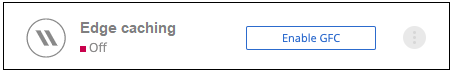

Release notes
Release notes
Getting started
 Suggest changes
Suggest changes
You use BlueXP to deploy the BlueXP edge caching Management Server and Core software in the working environment.
Enable BlueXP edge caching using BlueXP
In this configuration you will deploy the BlueXP edge caching Management Server and BlueXP edge caching Core in the same working environment where you created your Cloud Volumes ONTAP system using BlueXP.
Watch this video to see the steps from start to finish.
Quick start
Get started quickly by following these steps or scroll down to the remaining sections for full details:
 Deploy Cloud Volumes ONTAP
Deploy Cloud Volumes ONTAPDeploy Cloud Volumes ONTAP and configure SMB file shares. For more information, see Launching Cloud Volumes ONTAP in Azure, Launching Cloud Volumes ONTAP in AWS, or Launching Cloud Volumes ONTAP in Google Cloud.
 Deploy the BlueXP edge caching Management Server
Deploy the BlueXP edge caching Management ServerDeploy an instance of the BlueXP edge caching Management Server in the same working environment as the instance of Cloud Volumes ONTAP.
 Deploy the BlueXP edge caching Core
Deploy the BlueXP edge caching CoreDeploy an instance, or multiple instances, of the BlueXP edge caching Core in the same working environment as the instance of Cloud Volumes ONTAP and join it to your Active Directory domain.
 License BlueXP edge caching
License BlueXP edge cachingConfigure the BlueXP edge caching License Management Server (LMS) service on a BlueXP edge caching Core instance. You will need your NSS Credentials or a Customer ID and Subscription Number provided by NetApp to activate your subscription.
 Deploy the BlueXP edge caching Edge instances
Deploy the BlueXP edge caching Edge instancesSee Deploying BlueXP edge caching Edge instances to deploy the BlueXP edge caching Edge instances in each remote location. This step is not done using BlueXP.
Deploy Cloud Volumes ONTAP as your storage platform
BlueXP edge caching supports Cloud Volumes ONTAP deployed in Azure, AWS, and Google Cloud. For detailed prerequisites, requirements, and deployment instructions, see Launching Cloud Volumes ONTAP in Azure, Launching Cloud Volumes ONTAP in AWS, or Launching Cloud Volumes ONTAP in Google Cloud
Note the following additional BlueXP edge caching requirement:
-
You should configure SMB file shares on the instance of Cloud Volumes ONTAP.
If no SMB file shares are set up on the instance, then you are prompted to configure the SMB shares during the installation of the BlueXP edge caching components.
Enable BlueXP edge caching in your working environment
The installation wizard walks you through the steps to deploy the BlueXP edge caching Management Server instance and the BlueXP edge caching Core instance, as highlighted below.

-
Select the working environment where you deployed Cloud Volumes ONTAP.
-
In the Services panel, click Enable for the Edge caching service.

-
Read the Overview page and click Continue.
-
If no SMB shares are available on the Cloud Volumes ONTAP instance, you are prompted to enter the SMB Server and SMB Share details to create the share now. For details about the SMB configuration, see Storage platform.
When finished, click Continue to create the SMB share.

-
On the Global File Cache Service page, enter the number of Global File Cache Edge instances you plan to deploy, and then make sure your system meets the requirements for Network Configuration and Firewall Rules, Active Directory settings, and Antivirus exclusions. See Prerequisites for more details.

-
After you have verified that the requirements have been met, or that you have the information to meet these requirements, click Continue.
-
Enter the admin credentials you will use to access to the BlueXP edge caching Management Server VM and click Enable GFC Service. For Azure and Google Cloud you enter the credentials as a user name and password; for AWS you select the appropriate key pair. You can change the VM/instance name if you want.

-
After the BlueXP edge caching Management Service is successfully deployed, click Continue.
-
For the BlueXP edge caching Core, enter the admin user credentials to join the Active Directory domain, and the service account user credentials. Then click Continue.
-
The BlueXP edge caching Core instance must be deployed in the same Active Directory domain as the Cloud Volumes ONTAP instance.
-
The service account is a domain user and it is part of the BUILTIN\Backup Operators group on the Cloud Volumes ONTAP instance.

-
-
Enter the admin credentials you will use to access to the BlueXP edge caching Core VM and click Deploy GFC Core. For Azure and Google Cloud you enter the credentials as a user name and password; for AWS you select the appropriate key pair. You can change the VM/instance name if you want.

-
After the BlueXP edge caching Core is successfully deployed, click Go to Dashboard.

The Dashboard shows that the Management Server instance and the Core instance are both On and working.
License your BlueXP edge caching installation
Before you can use BlueXP edge caching, you need to configure the BlueXP edge caching License Management Server (LMS) service on a BlueXP edge caching Core instance. You will need your NSS Credentials or a Customer ID and Subscription Number provided NetApp to activate your subscription.
In this example, we will configure the LMS service on a Core instance that you just deployed in the public cloud. This is a one-time process that sets up your LMS service.
-
Open the Global File Cache License Registration page on the BlueXP edge caching Core (the Core you are designating as your LMS service) using the following URL. Replace <ip_address> with the IP address of the BlueXP edge caching Core:
https://<ip_address>/lms/api/v1/config/lmsconfig.html -
Click “Continue to this website (not recommended)” to continue. A page that allows you to configure the LMS, or check existing license information, is displayed.

-
Choose the mode of registration:
-
“NetApp LMS” is used for customers who have purchased NetApp BlueXP edge caching Edge licenses from NetApp or its certified partners. (Preferred)
-
“Legacy LMS” is used for existing or trial customers who have received a Customer ID through NetApp Support. (This option has been deprecated.)
-
-
For this example, click NetApp LMS, enter your Customer ID (preferably your email address), and click Register LMS.

-
Check for a confirmation email from NetApp that includes your GFC Software Subscription Number and Serial Number.

-
Click the NetApp LMS Settings tab.
-
Select GFC License Subscription, enter your GFC Software Subscription Number, and click Submit.

You will see a message that your GFC License Subscription was registered successfully and activated for the LMS instance. Any subsequent purchases will automatically be added to the GFC License Subscription.
-
Optionally, you can click the License Information tab to view all your GFC license information.
If you have determined that you need to deploy multiple BlueXP edge caching Cores to support your configuration, click Add Core Instance from the Dashboard and follow the deployment wizard.
After you have completed your Core deployment, you need to deploy the BlueXP edge caching Edge instances in each of your remote offices.
Deploy additional Core instances
If your configuration requires more than one BlueXP edge caching Core to be installed because of a large number of Edge instances, you can add another Core to the working environment.
When deploying Edge instances, you will configure some to connect to the first Core and others to the second Core. Both Core instances access the same backend storage (your Cloud Volumes ONTAP instance) in the working environment.
-
From the Global File Cache Dashboard, click Add Core Instance.

-
Enter the admin user credentials to join the Active Directory domain, and the service account user credentials. Then click Continue.
-
The BlueXP edge caching Core instance must be in the same Active Directory domain as the Cloud Volumes ONTAP instance.
-
The service account is a domain user and it is part of the BUILTIN\Backup Operators group on the Cloud Volumes ONTAP instance.
-
-
Enter the admin credentials you will use to access to the BlueXP edge caching Core VM and click Deploy GFC Core. For Azure and Google Cloud you enter the credentials as a user name and password; for AWS you select the appropriate key pair. You can change the VM name if you want.
-
After the BlueXP edge caching Core is successfully deployed, click Go to Dashboard.

The Dashboard reflects the second Core instance for the working environment.